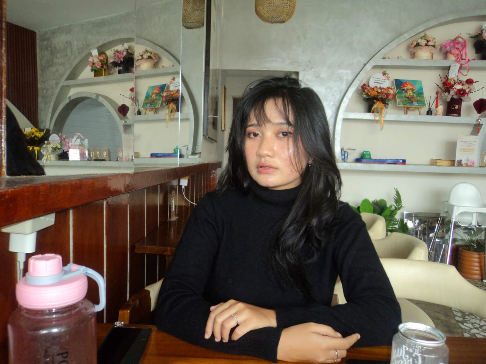

SMP Santo Petrus Medan
Masa sekolah menengah pertama menjadi bagian penting dalam membangun dasar pengetahuan, kedisiplinan, dan pengalaman belajar yang membentuk diri saya.
Saya Gracia Okta Elisabeth Damanik, mahasiswa PGPAUD yang percaya bahwa setiap anak punya cara istimewa untuk tumbuh, belajar, dan mengenal dunia. Saya senang menggabungkan kepedulian, kreativitas, dan pengalaman nyata untuk menciptakan proses belajar yang hangat dan bermakna.


Saya adalah pribadi yang senang belajar hal baru, mencoba ide kreatif, dan membangun hubungan yang baik dengan anak-anak. Bagi saya, pendidikan anak usia dini merupakan langkah penting untuk membantu anak tumbuh percaya diri, mandiri, dan berani bereksplorasi.
Melalui perkuliahan dan kegiatan magang, saya terus melatih kesabaran, komunikasi, tanggung jawab, serta kemampuan merancang kegiatan yang menyenangkan dan sesuai kebutuhan anak.
Perjalanan pendidikan saya membentuk rasa ingin tahu, kedisiplinan, dan semangat untuk terus belajar. Kini, saya membawa bekal tersebut dalam perjalanan menjadi calon pendidik anak usia dini.
Masa sekolah menengah pertama menjadi bagian penting dalam membangun dasar pengetahuan, kedisiplinan, dan pengalaman belajar yang membentuk diri saya.
Di jenjang SMA, saya terus memperluas wawasan, belajar bertanggung jawab, dan mempersiapkan diri untuk melangkah ke pendidikan tinggi.
Saat ini saya menempuh pendidikan di bidang Pendidikan Guru Pendidikan Anak Usia Dini (PGPAUD). Saya mempelajari tumbuh kembang anak, strategi pembelajaran, serta pentingnya menciptakan pengalaman belajar yang aman, kreatif, dan bermakna.
Saya senang menggabungkan kreativitas, komunikasi, dan kepedulian untuk mendukung pengalaman belajar anak usia dini.
Dari ruang kelas hingga kegiatan pengabdian dan usaha kreatif, setiap pengalaman memberi pelajaran baru. Pilih cerita yang ingin kamu baca untuk mengenal proses belajar saya lebih dekat.

Kesempatan untuk belajar mendampingi anak, mengamati rutinitas kelas, dan memahami pentingnya suasana belajar yang positif.
Baca cerita magang ↗
Pengalaman untuk mengenal kegiatan belajar di sekolah, beradaptasi dengan lingkungan kelas, dan belajar bekerja sama dengan para pendidik.
Baca cerita magang ↗
Selama tiga bulan, saya belajar mendampingi anak, membangun interaksi yang hangat, dan mendukung kegiatan kelas dengan sabar serta penuh perhatian.
Baca cerita Maqang ↗
Di KB Berkah, saya mendapat kesempatan untuk mengenal lebih dekat kebutuhan anak usia kelompok bermain. Saya belajar mendukung aktivitas sederhana, membangun interaksi yang hangat, dan memahami bahwa rasa aman serta suasana menyenangkan membantu anak berani bereksplorasi.
Baca cerita pengalaman ↗
Melalui kegiatan PKM di PAUD Tunas Harapan, saya ikut mengenal peran media edukatif dalam mendukung kualitas pembelajaran. Kegiatan ini memperkuat pandangan saya bahwa media belajar yang menarik, sesuai usia, dan digunakan dengan tujuan yang jelas dapat membantu pendidik menghadirkan pengalaman belajar yang lebih bermakna.
Baca cerita kegiatan ↗
Saya mengembangkan usaha aksesori buatan tangan dengan mengolah ide, memilih perpaduan warna, dan memperhatikan detail setiap produk. Dari proses ini, saya belajar bahwa berwirausaha membutuhkan kreativitas, ketekunan, komunikasi dengan pelanggan, dan kemauan untuk terus memperbaiki kualitas. Kunjungi Instagram penjualan saya untuk melihat karya yang tersedia.
Lihat Instagram @kikioci_ ↗
Pengalaman berjualan kue memberi saya ruang untuk belajar mengelola proses dari persiapan hingga produk siap ditawarkan. Saya belajar memperhatikan kualitas, kerapian penyajian, dan kepercayaan pelanggan. Bagi saya, usaha kecil juga menjadi latihan untuk lebih mandiri, bertanggung jawab, dan berani mengembangkan ide.
Cerita usaha ↗Setiap tempat memberi pelajaran yang berbeda. Di bagian ini, saya membagikan refleksi singkat dari pengalaman magang—bukan hanya tentang apa yang saya lakukan, tetapi juga tentang apa yang saya pelajari.
Selama tiga bulan menjalani magang di Orion Prime School, saya berkesempatan mengenal lebih dekat suasana pembelajaran anak usia dini. Salah satu pengalaman yang berkesan adalah ikut menyiapkan dan membuat media ajar untuk mendukung kegiatan belajar. Proses ini mengajak saya memikirkan bagaimana materi dapat disampaikan dengan cara yang lebih menarik dan mudah dipahami anak.
Saat membuat media ajar, saya belajar bahwa bentuk, warna, dan cara penggunaan perlu disesuaikan dengan tujuan kegiatan serta kebutuhan anak. Saya juga belajar mengamati respons anak, bekerja sama dengan pendidik, dan memahami bahwa media sederhana pun dapat membuka kesempatan bagi anak untuk mencoba, bertanya, dan bereksplorasi.
Pengalaman di Orion membuat saya semakin ingin mengembangkan kreativitas dalam dunia PAUD. Saya menyadari bahwa menjadi pendidik bukan hanya tentang menyampaikan materi, tetapi juga merancang pengalaman yang hangat, menyenangkan, dan bermakna. Setiap proses memberi saya kesempatan untuk belajar, memperbaiki ide, dan bertumbuh.
“Keep Learning, Keep Creating, and Keep Growing.”
← Kembali ke pengalaman


Selama empat bulan di Sekolah Katolik Budi Murni 2, saya memperoleh kesempatan untuk memperluas pengalaman di lingkungan sekolah. Saya belajar menyesuaikan diri dengan rutinitas yang ada, memperhatikan kebutuhan anak, dan memahami bahwa kerja sama antara mahasiswa magang dan guru sangat penting untuk mendukung kegiatan belajar.
Pengalaman ini mengajarkan saya untuk lebih teliti, terbuka terhadap arahan, dan tidak ragu bertanya ketika ada hal yang perlu dipahami. Saya juga semakin menyadari bahwa hal-hal sederhana—seperti memberi perhatian, membantu menyiapkan kegiatan, dan bersikap konsisten—dapat memberi dukungan berarti bagi proses pembelajaran.
Setiap pengalaman adalah ruang untuk belajar menjadi lebih baik.
← Kembali ke pengalaman.jpeg)

Pengalaman magang selama tiga bulan di TK Kristen Gracia menjadi bagian lain dari proses saya mengenal dunia pendidikan anak usia dini. Saya belajar bahwa setiap anak memiliki karakter, minat, dan cara belajar yang berbeda. Karena itu, pendidik perlu hadir dengan sikap sabar, hangat, dan siap menyesuaikan pendekatan.
Pengalaman ini mendorong saya untuk terus melatih kemampuan berkomunikasi, membangun suasana yang nyaman, dan memandang setiap kegiatan sebagai kesempatan untuk mendukung tumbuh kembang anak. Saya ingin membawa pelajaran-pelajaran tersebut ke pengalaman berikutnya dan terus memperbaiki diri.
Saya ingin menjadi pendidik yang bukan hanya mengajar, tetapi juga memberi semangat untuk tumbuh.
← Kembali ke pengalaman

Selama tiga bulan magang di KB Berkah, saya mendapat kesempatan untuk melihat bagaimana anak-anak pada usia kelompok bermain belajar melalui rutinitas, interaksi, dan kegiatan sederhana. Saya belajar hadir dengan sabar, memberi perhatian, dan mendukung anak sesuai tahap perkembangannya.
Pengalaman ini mengingatkan saya bahwa hal kecil seperti menyapa dengan hangat, memberi contoh, dan memberi kesempatan anak mencoba sendiri dapat membantu membangun rasa percaya diri. Saya ingin terus mengembangkan kepekaan dan keterampilan agar dapat mendampingi anak dengan lebih baik.
Terus belajar, mencoba, dan bertumbuh melalui setiap kesempatan.
← Kembali ke pengalaman

Dalam kegiatan PKM di PAUD Tunas Harapan dengan tema “Peningkatan Kualitas Pendidikan melalui Media Edukatif”, saya ikut terlibat dalam pembuatan media pembelajaran dan hiasan kelas. Kegiatan ini menjadi pengalaman yang menyenangkan karena saya dapat menuangkan ide kreatif sekaligus ikut mendukung suasana belajar yang lebih menarik bagi anak.
Melalui proses tersebut, saya belajar bahwa media edukatif perlu dirancang dengan memperhatikan tujuan pembelajaran, usia anak, serta keamanan dan kemudahan penggunaannya. Saya juga melihat bahwa dekorasi kelas yang tertata dan ramah anak dapat membantu menghadirkan lingkungan yang lebih ceria, nyaman, dan mengundang rasa ingin tahu.
Terus belajar, mencoba, dan bertumbuh melalui setiap kesempatan.
← Kembali ke pengalaman.jpeg)


Usaha aksesori handmade menjadi ruang bagi saya untuk menciptakan produk dengan tangan saya sendiri, mulai dari memikirkan desain, memilih warna dan bahan, merangkai setiap bagian, hingga merapikan hasil akhirnya. Saya menikmati proses mengubah ide menjadi aksesori yang memiliki ciri dan sentuhan pribadi.
Selain mengasah kreativitas dan ketelitian, pengalaman ini mengajarkan saya untuk tekun, mengatur waktu, dan memperhatikan kualitas setiap produk. Saya juga belajar mengenalkan karya kepada pelanggan dan mengembangkan usaha secara bertahap melalui Instagram penjualan @kikioci_.
Terus belajar, mencoba, dan bertumbuh melalui setiap kesempatan.
← Kembali ke pengalaman

Pengalaman berjualan kue mengajarkan saya untuk lebih memperhatikan proses, kualitas, dan cara menyajikan produk dengan baik. Di balik setiap penjualan, ada persiapan, ketelitian, dan tanggung jawab untuk memberikan hasil yang memuaskan.
Saya juga belajar bahwa membangun usaha membutuhkan konsistensi, keberanian mencoba, dan kemauan untuk terus belajar. Pengalaman ini menjadi salah satu cara saya mengasah kemandirian dan kemampuan mengelola ide menjadi sesuatu yang bernilai.
Terus belajar, mencoba, dan bertumbuh melalui setiap kesempatan.
← Kembali ke pengalaman
.jpeg)


.jpeg)
Saya senang mengubah ide menjadi karya yang bisa dilihat, disentuh, dan digunakan. Mulai dari aksesori buatan tangan hingga media pembelajaran dan dekorasi kelas, setiap proses memberi ruang untuk bereksperimen, melatih ketelitian, serta mencari cara kreatif agar sesuatu menjadi lebih menarik dan bermanfaat.
Aktivitas yang memberi inspirasi, menjaga semangat, dan membantu saya melihat sesuatu dari sudut pandang yang baru.
Menuangkan ide melalui karya kreatif.
Menjadi bagian dari kegiatan paduan suara GBKP Km 7.
Menjaga kebugaran tubuh, melatih stamina, dan menikmati waktu untuk menyegarkan pikiran
Mengumpulkan inspirasi untuk berkembang.
Saya berharap dapat menjadi pendidik anak usia dini yang penuh empati, kreatif, dan bertanggung jawab. Saya ingin menciptakan lingkungan belajar yang aman, menyenangkan, serta memberi kesempatan kepada setiap anak untuk bertanya, mencoba, dan berkembang sesuai potensinya.
Terima kasih telah meluangkan waktu untuk mengenal saya dan perjalanan belajar saya. Saya terbuka untuk bertukar ide, mendapatkan masukan, dan belajar dari pengalaman baru bersama orang-orang yang memiliki semangat yang sama.